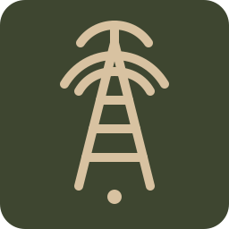
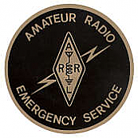
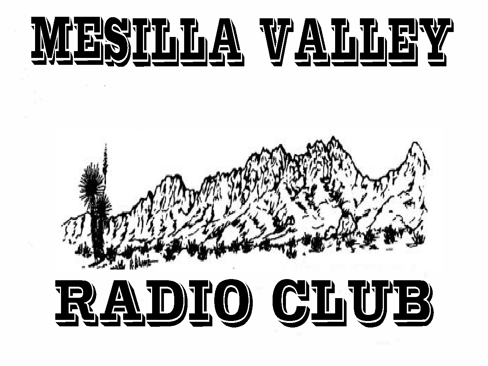
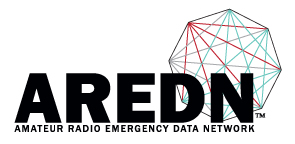

Quick Links & Resources

Local Winlink Info

New Mexico ARRL Section ARES/RACES

N5BL Mesilla Valley Radio Club

ARRL official website
ARRL ARES page

AREDN official website
Winlink official website
DAC-ARES Local Resources
Net Schedules
Calendar
Events
Training / Deployment
Area Repeaters
Resources
Local Focus
AREDN
- Local mesh network for voice & data
- Resilient communications in outages
- Community-built, field-proven systems
Winlink
- Email over radio when internet is down
- Global Radio Email network
- Dependable messaging when it counts
Training & Resources
- ARES training and deployment support
- Operating guides and reference material
- Stay informed. Stay prepared.
Contact
For questions about Dona Ana County ARES, local emergency communications, meetings, or training, use the public contact information below.
- Email: fwagoner@zianet.com
- Meeting info: 7:00 PM on the third Tuesday of each month at the MVRC Clubhouse, 6609 Jefferson Ln., Las Cruces, NM
- Weekly net: Tuesdays at 6:30 PM on the 146.760 MHz -100 kHz repeater on Caballo Mountain